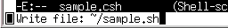

この授業の第１１回では，シェルで実行するコマンドをファイルに書いておき，そのファイルをシェルに読み込ませることでコマンドを実行させる方法について学びました．ただし，第１１回では cat コマンドを使ってコマンドをファイルに書き込んでいましたが，シェルスクリプトはテキストファイルなので，普通これも emacs などのテキストエディタを使って作成します。
| テキストエディタでシェルスクリプトを作成する |
|---|
% emacs sample.csh &[Enter] |
ファイル名の拡張子は，実はここでは何でもいいんですが（付けなくてもいい），csh のスクリプトなので一応 .csh という拡張子を付けることにします．emacs が起動したら，以下の内容をタイプしてください．
#!/bin/csh -f[Enter] echo "今日は"[Enter] date[Enter] echo "です．"[Enter] cal[Enter]
タイプできたら C-x C-s でファイルを保存してください．このとき emacs を終了させないでおきましょう．次に，このファイルを実行可能に設定します．ターミナルのウィンドウで次のコマンドを実行してください．
| シェルスクリプトを実行可能にする |
|---|
% chmod +x sample.csh[Enter] |
それでは，このスクリプトを実行してみましょう．
| シェルスクリプトを実行する |
|---|
% ./sample.csh[Enter] |
このシェルスクリプトは csh によって実行されます．しかし csh のシェルスクリプトは，実はあまり一般的ではありません．Unix/Linux では多くのコマンドがシェルスクリプトで実現されていますが，そのほとんどが sh (Bourne shell) に対応したものになっています（Linux の場合，実際には sh と互換性のある bash (Bourne again shell) が実行されます）．
それでは sh 用のスクリプトを作成してみましょう．先ほど作成した csh 用のシェルスクリプトを，sh 用に変更してみます．emacs は sample.csh を編集している状態になっていると思いますから，これを一旦 sample.sh というファイル名で保存してください．emacs のバッファの内容を別の名前で保存するには，C-x C-w を使います．C-x C-w をタイプして，保存するファイル名に sample.sh を指定してください．
| sample.sh として保存する | |
|---|---|
| C-x C-w をタイプして，ファイル名に sample.sh を指定する． |  |
保存が完了したら，バッファの最初の１行を，csh ではなく sh を起動するように変更してください．
#!/bin/sh echo "今日は" date echo "です．" cal
変更できたら C-x C-s でファイルを保存します．このときも emacs はバックグラウンドで動かしたままにしておいてください．そして，ターミナルのウィンドウで sample.sh を実行可能に設定したあと，実際に実行してみてください．
| シェルスクリプトを実行可能にして実行する |
|---|
% chmod +x sample.sh[Enter] % ./sample.sh[Enter] |
このスクリプトは sh で解釈されますが，単にコマンドを順番に実行するだけなので，結果は csh の時と同じはずです．それでは，この sh を対話的なシェルとして使って，実際の動作を確かめてみましょう．
sh コマンドを実行すると，sh をシェルとして使用できるようになります．sh のプロンプトは，ここでは "$" １文字であるとします．
| sh をシェルとして使う | |
|---|---|
| sh を起動してみる． |
% sh[Enter]
$ ←プロンプトが変わる
|
| 今は csh の中で sh が起動している．sh もシェルなので，コマンドを実行することができる． |
$ date[Enter] 2002年 5月29日(水曜日) 11時38分38秒 JST |
このように，sh もコマンドを実行するための標準的なシェルとして使用されます．特に Linux では，sh と互換性のある bash がログインシェル（ログイン時やターミナルのウィンドウを開いたときに実行されるシェル）としてよく使われます．sh はコマンドを実行する点では csh と同じですが，複雑なことをしようとしたときの書き方（文法）が異なります．sh (bash) の詳細は，man bash で調べてください．
sh はシェル変数や環境変数の取り扱い方が csh とは異なります．sh ではシェル変数に値を代入する際に set コマンドを使用しません．ただし，シェル変数を消去するには unset コマンドを使います．
| シェル変数 (sh) | |
|---|---|
| 変数 name に ichiro を代入してみる．変数 name は自動的に作られる．sh では変数への値の格納に set コマンドを用いない．また "=" の前後にはスペースを入れない． |
$ my="My name is"[Enter] |
| echo コマンドを使って，name の内容を見てみる．変数の値を参照する(取り出す)には，変数名に "$" を付ける． |
$ echo $my[Enter] My name is |
| read コマンドを使えば，標準入力から入力したデータを変数に格納できる． |
$ read name[Enter] Kentaro[Enter] ←データ入力待ちになるので，何か入れて改行 $ echo $my $name[Enter] My name is Kentaro ←さっき入れたものが入っている |
| １回で複数の変数への代入ができる．expr は引数を数式とみなして計算するコマンド． |
$ v1=10 v2=20[Enter] $ echo $v1 $v2[Enter] 10 20 $ expr $v1 + $v2[Enter] 30 |
| set コマンドでシェル変数を全部表示する． |
$ set[Enter] |
| シェル変数を消去するには unset コマンドを使う．csh とは異なり，未定義の変数を参照してもエラーメッセージは出ない． |
$ unset v1 v2 v3[Enter]
$ echo $v1[Enter]
←何も出力されない
|
sh の環境変数はシェル変数と密接に関連しています．環境変数を設定するには，一旦シェル変数を設定し，それを環境に組み込みます．これには export コマンドを使います．また環境変数の解除には，シェル変数同様 unset コマンド，環境変数の一覧を表示するには env コマンドを使います．
| 環境変数 (sh) | |
|---|---|
| HENSU という変数を表示するだけの csh スクリプト b を作る．もちろん emacs を使ってもよい． |
$ cat > b[Enter] #!/bin/csh -f[Enter] echo $HENSU[Enter] Ctrl-D |
| b を実行可能にする． |
$ chmod +x b[Enter] |
| b を実行してみる．多分エラーになる． |
$ ./b[Enter] HENSU: 変数を定義していません. |
| シェル変数 HENSU に値を与えてもエラーになる． |
$ HENSU=10[Enter] $ ./b[Enter] HENSU: 変数を定義していません. |
| export コマンドを使って，シェル変数 HENSU を環境に組み込む．今度はうまくいく． |
$ export HENSU[Enter] $ ./b[Enter] 10 |
| コマンドの左にシェル変数への代入を置くと，そのコマンドに対してだけ一時的に環境変数となります． |
$ HENSU=20 ./b[Enter] 20 ←b では環境変数 HENSU に 20 が入っている $ echo $HENSU[Enter] 10 ←もとのシェルでは HENSU は 10 のまま |
シェルや他のプログラミング言語において，データや画面表示に使う単語や文章のような「文字がならんだデータ」のことを文字列と呼びます．文字列は，それが空白などを含んでいてもひとかたまりのデータとして扱えるように，引用符でくくります．sh や csh では，引用符によって動作が違います．
引用符による動作の違い
- '～'
- '～'（シングルクォーテーションマーク，シングルクォート）ではさんだものは，スペースなどを含めて単一の文字列として取り扱われます．
- "～"
- "～"（ダブルクォーテーションマーク，ダブルクォート）ではさんだものは，スペースなどを含めて単一の文字列として取り扱われます．ただし，変数（シェル変数，環境変数）はその内容に置き換わります．また次の `～`（バッククォーテーションマーク）による置き換えも行われます．
- `～`
- `～`（バッククォーテーションマーク，バッククォート）は上の２つとは異なり，この間にはさんだものをコマンドとして実行します．そして，その標準出力への出力を，この場所に書かれた文字列として取り扱います．
| 引用符 | |
|---|---|
| echo コマンドで *（アスタリスク）を出力しようと思う．しかし，* はワイルドカードなので，ファイル名の一覧が出力されてしまう． |
$ echo *[Enter]
（ファイル名の一覧が出力される）
|
| \ を使えば * の効果を打ち消すことができる． |
$ echo \*[Enter] * |
| '～' や "～" ではさんでも * を出力できる． |
$ echo '*'[Enter] * $ echo "*"[Enter] * |
| echo コマンドで $HOME を出力してみる．HOME はホームディレクトリの場所を格納している環境変数． |
$ echo $HOME[Enter]
/home/s3/s085000 （ホームディレクトリのパス名）
|
| \ を使って $ の効果を打ち消すことができる． |
$ echo \$HOME[Enter] $HOME |
| しかし，"～" ではさんでも $ の効果は生きている． |
$ echo "$HOME"[Enter] /home/s3/s085000 |
| '～' では $ がそのまま出力される． |
$ echo '$HOME'[Enter] $HOME |
| `～` にはさんだものは，コマンドとして実行される．右の例は，date コマンドの出力をシェル変数 d に格納する． |
$ d=`date`[Enter] $ echo $d[Enter] 2003年 7月 9日(水曜日) 11時45分22秒 JST |
それでは，sample.sh を次のように変更（太字の部分）してください．
#!/bin/sh echo "今日は" date echo "です．" echo "あなたは昭和何年生まれですか？" read year echo "あなたは何月生まれですか？" read month echo "あなたの誕生月のカレンダーです．" cal $month `expr $year + 1925`
変更が完了したら C-x C-s で sample.sh を保存し，ターミナルのウィンドウでそれを実行してみてください．
| sample.sh を実行する |
|---|
$ ./sample.sh[Enter] |
引用符や変数は組み合わせて使用することができます．sample.sh を，次のように変更してみてください．最初に表示している３行を，１行にまとめます．date コマンドの引数について知りたければ，man date で調べてください．
#!/bin/sh d=`date +'%m月%d日'` echo "今日は$dです．" echo "あなたは昭和何年生まれですか？" read year echo "あなたは何月生まれですか？" read month echo "あなたの誕生月のカレンダーです．" cal $month `expr $year + 1925`
C-x C-s で sample.sh を保存し，ターミナルのウィンドウで sample.sh を実行してみてください．
| sample.sh を実行する |
|---|
% ./sample.sh[Enter] |
date コマンドは引数で出力する日付と時間の書式を制御できます．詳しくは man date を見てください．
この sample.sh を実行すると，「あなたは昭和何年生まれですか？」という質問が表示された後，次の行に改行してデータの入力待ちになります．「あなたは昭和何年生まれですか？」という表示は，データの入力を促すプロンプト（入力促進符号）なので，ここで改行されないほうが見やすいかもしれません．echo コマンドに -n というオプションを付ければ，この改行を抑止できます．
| echo コマンドの -n オプション | |
|---|---|
| コマンドを ;（セミコロン）で区切れば，１行に複数のコマンドを書くことができる．この例では，ひとつの echo コマンドごとに改行が出力される． |
$ echo "This is "; echo "a pen."[Enter]
This is
a pen. ←改行が入る
|
| echo コマンドに -n オプションを付ければ，この改行を抑止できる． |
$ echo -n "This is "; echo "a pen."[Enter]
This is a pen. ←改行が入らない
|
| echo -n と read の組み合わせ | |
|---|---|
| read コマンドがデータ入力を待っているときは，プロンプトは表示されない．そこで，echo コマンドを使って自分でプロンプトを出してやることにする．しかし，これではプロンプト（ここでは "x="）の後に改行が出力されてしまい，read による入力データ待ちと分離してしまう． |
$ echo "x="; read x[Enter] x= ←echo コマンドを使って出したプロンプト 10[Enter] ←データ入力待ちになるので何か入れて改行 |
| echo コマンドに -n オプションを付ければ改行が出力されないため，プロンプトの直後で入力データを待つことができる． |
$ echo -n "x="; read x[Enter]
x=10[Enter] ←プロンプトのところでデータ入力を待つ
|
それでは，sample.sh の中の２つの echo コマンドに，-n オプションを追加してください．
#!/bin/sh d=`date +'%m月%d日'` echo "今日は$dです．" echo -n "あなたは昭和何年生まれですか？" read year echo -n "あなたは何月生まれですか？" read month echo "あなたの誕生月のカレンダーです．" cal $month `expr $year + 1925`
追加できたら C-x C-s で sample.sh を保存し，ターミナルのウィンドウで sample.sh を実行してみてください．
| sample.sh を実行する |
|---|
$ ./sample.sh[Enter] |
実は sh は csh より古く，Unix の初期のログインシェルとして使われていました．現在ではログインシェルとして使用するよりも，プログラミング言語としてよく使われます．ただし bash（皆さんが今使っている sh）は，Linux における標準的なログインシェルとしても使われています．
| sh を終了する | |
|---|---|
| sh を終了する．sh の場合も Ctrl-D か exit コマンドで終了できる． |
$ exit[Enter]
% ←csh のプロンプトに戻る
|
次に，sh スクリプトで数を数えるコマンド（カウンタ）を counter.sh というファイル名で作ってみましょう．カウンタとは，下の例のように，実行するたびに出力する数値が１ずつ増えていくコマンドです（以下はあくまでも例ですから，今はまだ実行できません）．
| カウンタの動作 |
|---|
% ./counter.sh[Enter]
1
% ./counter.sh[Enter]
2
% ./counter.sh[Enter]
3 ←実行するたびに数が増えていく
|
counter.sh は数値（カウント）を出力するとすぐに終了してしまいますから，counter.sh は何らかの方法で前回出力した数値（カウント）が何だったか覚えておく必要があります．ここでは，それをファイルに記録しておくことにします．この段取りは次のようになります．
カウントを記録しておくファイルのファイル名は count.dat とします．変数にデータを格納するには read コマンドを使用しますが，ここではそのデータを count.dat から取り出す必要があります．したがって，このファイルの中からデータを取り出してシェル変数に格納するには，read コマンドの標準入力をリダイレクトして，count.dat からデータを取り出すようにします．
| ファイルから変数にデータを格納する |
|---|
read count < count.dat |
ただし，最初に counter.sh を実行した時には前回のカウントは調べられませんから，その場合はカウントを 0 としておく必要があります．最初に counter.sh を実行したときには，おそらく count.dat は存在しないでしょうから，このファイルが見つからなければ counter.sh を初めて動かしたのだと判断できます．あるファイルが存在するかどうかを調べるには，test コマンドを使います．
| test コマンドと終了ステータス | |
|---|---|
| コマンドはその実行を終えると，終了ステータスをシェルに報告する．直前に実行したコマンドの終了ステータスは $? という特殊な変数で取り出すことができる． |
$ ls[Enter] ←何かコマンドを実行してみる （ファイル名の一覧が出力される） $ echo $?[Enter] 0 ←終了ステータス 0（ls の実行成功） |
| 終了ステータスは整数値であり，0 が真（コマンドは正常に実行できた），非 0 が偽（コマンドの実行に失敗した）を表す． |
$ ls xyz[Enter] ←引数に存在しないファイル名を指定 ls: xyz: そのようなファイルやディレクトリはありません $ echo $?[Enter] 1 ←終了ステータス 1（ls の実行失敗） |
| test コマンドは引数に指定したテストを実行して，結果を終了ステータスでシェルに報告する．tesf -f file だと，file というファイルが存在すれば，終了ステータスは真 (0) になる． |
$ test -f xyz[Enter] $ echo $?[Enter] 1 ←test コマンドは何も言わないが終了ステータスは 1 $ test -f sample.sh[Enter] $ echo $?[Enter] 0 ←sample.sh というファイルはさっき作ったのであるはず |
test コマンドはファイルの有無のほかにも，いろんなことを調べることができます．詳しくは man test で調べてください．これと if という制御文を組み合わせれば，終了ステータスをもとにコマンドの実行順序を制御（分岐）できます．
| if と終了ステータス |
|---|
if コマンド then （上のコマンドの実行が成功したときに この部分のコマンドが実行される） else （上のコマンドの実行が失敗したときに この部分のコマンドが実行される） fi |
すなわち，「もし(if)，コマンドの実行が成功した，ならば(then) 前半部分のコマンドを実行する，さもなければ(else)後半部分のコマンドを実行する」という実行順序の制御を行います．ここでは count.dat というファイルが存在すれば，それからデータを取り出し，さもなければ（ファイルが存在しなければ）カウントを 0 にするという処理を行いますから，これは次のようなスクリプトになります．
| count.dat があるときだけデータを取り出す |
|---|
if test -f count.dat
then
read count < count.dat
else
count=0
fi
|
これでようやく「前回のカウント」をシェル変数 count に取り出すことができました．それでは，これに1を加えましょう．シェル変数 count の値は $count として参照できます．expr コマンドを使って，これに 1 を加えます．これは expr $count + 1 でできます．この出力を再び count に格納します．それには `～` を使います．
| シェル変数 count に 1 を加える |
|---|
count=`expr $count + 1` |
あとは，このシェル変数 count の値を標準出力に出力し，さらにファイル count.dat にも保存すれば完了です．コマンドの出力をファイルに保存するには，標準出力をリダイレクトします．
| シェル変数の値を標準出力とファイルに出力する |
|---|
echo $count echo $count > count.dat |
すべての処理が終わったら，sh スクリプトを終了します．sh スクリプトの終了にも exit コマンドを使いますが，その引数にこのスクリプトの終了ステータスを指定します．sh スクリプトが正しく仕事を完了して終了するなら，通常ここに 0 を指定します．終了ステータスを指定しなければ，sh スクリプト内で最後に実行したコマンドの終了ステータスが，スクリプトの終了ステータスとなります．
| sh スクリプトを終了する |
|---|
exit 0 |
以上の内容の sh スクリプト counter.sh を作成し（１行目に #!/bin/sh を入れるのを忘れないように），それを実行可能にしてから実際に実行してみてください．ちゃんと実行回数を数えることができるでしょうか？
| カウンタの実行 |
|---|
% ./counter.sh[Enter] 1 % ./counter.sh[Enter] 2 % ./counter.sh[Enter] 3 |
Webページ中にカウンタを組み込むめば，Web ページがどのくらいの人に見てもらえたのか数えることができます．このようなカウンタはアクセスカウンタと呼ばれたりします．SSI (Server Side Include) という機能を使えば Web ページ中にコマンドの出力を埋め込むことができるので，この機能と前節で作成したカウンタのスクリプト counter.sh を使って，簡単なアクセスカウンタを作ってみましょう．
注意SSI は間違った使い方をするとサーバにトラブルを起こしたり，大きなセキュリティホール（Webページの改ざんや不正侵入などを可能にしてしまうような不備）を作る場合があるため，スクリプトの作成は慎重に行う必要があります．
counter.sh をホームページ作成用の作業ディレクトリ html の下にコピーしてください．
% cp counter.sh ~/html[Enter]
次に，同じディレクトリに下のような HTML ファイルを作成してください． ファイル名は counter.shtml としてください．
<!DOCTYPE HTML PUBLIC "-//W3C//DTD HTML 4.01 Transitional//EN">
<html>
<head>
<title>counter test</title>
</head>
<body>
あなたは <!--#exec cmd="./counter.sh"--> 番目の訪問者です．
</body>
</html>
こうすると，このページにアクセスするたびに counter.sh が実行されて，その出力が <!--...--> の部分と置き換わります．counter.sh の出力が 1234 なら，この部分は次のようになります．
あなたは 1234 番目の訪問者です．
参考までに，別のファイル（下の例では file.txt）を埋め込むときには次のようにします．
あなたは <!--#include file="file.txt"--> 番目の訪問者です．
なお，SSI は Web サーバソフトウェアの機能ですから，これらのファイルを Web サーバにアップロードしなければ機能しません．
それでは，作成した counter.sh と counter.shtml を Web サーバにアップロードしてください．アップロードできたら，こんどは Web サーバに遠隔ログインします．遠隔ログイン用のコマンドには telnet や rsh などいくつかのものがありますが，ここでは ssh コマンドを使います．
遠隔ログインWeb サーバ用のコンピュータは，皆さんが使っているコンピュータとは別のマシンなので，SSI や CGI などの凝った設定をしたいときには，Web サーバ用のコンピュータにログインして作業する必要があります．離れたところにあるコンピュータにネットワークを介してログインすることを，遠隔ログインあるいはリモートログインと言います．
counter.sh は，それを組み込んだ Web ページ (counter.shtml) へのアクセスによって実行されます．ところが，誰があなたの Web ページにアクセスしたのかを知るのは困難なので，このアクセスは（あなたではない）特別なユーザによるアクセスとして取り扱われます．それぞれのファイルの保護モードは，このことを考慮して設定しておく必要があります．
| Web サーバ上での設定 | |
|---|---|
| ssh コマンドを使って，students に遠隔ログインする． |
% ssh students[Enter] ←ssh コマンドで students にログイン s085000@students's password:（パスワードを入力する） Last login: Mon Jul 7 11:29:07 2003 nachi00 % ←students でシェルが起動する |
| counter.sh を実行可能にする． |
% ls[Enter] ←ファイルの一覧を確認する ～ counter.sh ～ ←counter.sh が含まれている % chmod +x counter.sh[Enter] % ls -l counter.sh[Enter] ←保護モードを確認する -rwxr-xr-x 1 s085000 students 179 Jul 7 12:48 counter.sh |
| カウンタの初期値を設定しておく．このファイルは誰もが読み書き可能にしておく． |
% echo 0 > count.dat[Enter] ←初期値を0に設定する % chmod ugo+rw count.dat[Enter] ←全員読み書き可 % ls -l count.dat[Enter] ←保護モードを確認する -rw-rw-rw- 1 s085000 students 2 Jul 7 12:48 count.dat |
| students からログアウトする． |
% logout[Enter] ←students からログアウト % ←こっちは今使っているマシンのプロンプト |
注意遠隔ログインすれば，離れたところにあるコンピュータ上でコマンドを実行できます．したがって，もしあなたのパスワードがわかれば，世界中の誰もがあなたに成り代わって和歌山大学のネットワークに侵入し，やりたい放題できることになります．繰り返しになりますが，パスワードの管理にはくれぐれも気をつけてください．なお，students におけるパスワードを変更するには，passwd コマンドを使用してください．
グラフィカルなカウンタを作るためには，Perl で GD （日本語訳はここ）というモジュールを使ったりすると便利なのですが，ここでは counter.sh の出力を工夫してみます．まず，次のような数字の画像を counter.shtml と同じディレクトリ内に用意したとします．
|
|
|||
| 0.png | 1.png | 2.png | 3.png | 4.png |
|---|---|---|---|---|
|
|
|
|
|
| 5.png | 6.png | 7.png | 8.png | 9.png |
このとき，HTML で次のように表現すれば， という表示が得られます．
<img src="1.png"><img src="2.png"><img src="3.png"><img src="4.png">
つまり，counter.sh の 1234 といった出力を上記のように変換すれば，グラフィカルなカウンタが実現できます．このような文字列の置き換えを行うには，sed というコマンドを使うと便利です．sed は正規表現を使って入力データを加工するフィルタコマンドです．
% echo 1234 | sed 's/./<img src="&.png">/g'[Enter] <img src="1.png"><img src="2.png"><img src="3.png"><img src="4.png">
sh には if 以外に繰り返しを行う for や while，複数の条件に分岐できる case などの実行制御機能があります．
| for（個々の引数について繰り返し） |
|---|
for x in this is a pen.
do
echo $x
done
|
for は in の右側に書かれたものを一つ一つシェル変数 x に格納し，そのたびに do ～ done の間を実行します．上の例では x に this を入れた後 echo $x を実行し，次に is を格納して echo $x を実行するという具合に，this，is，a，pen. の４つに対してそれぞれ echo $x が実行されます．ここにワイルドカードを指定すれば，カレントディレクトリにある一つ一つのファイルに対して処理を行うことができます．
| while（条件が満たされている間繰り返し） |
|---|
while read x
do
echo $x
done
|
while は while の右側に書かれたコマンドの終了ステータスが真の間，do ～ done の間を繰り返し実行します．上の例では read が成功している間，すなわちデータの入力が行われている間，echo $x が実行されます．データの入力が終了した（ファイルの終わりに達した）場合などに終了ステータスは偽になりますから，繰り返しは終了します．
| case（パターンにあわせて処理を選択） |
|---|
case $x in
a)
echo "$x は a というファイル"
;;
b*)
echo "$x は b で始まるファイル"
;;
*)
echo "$x はその他のファイル"
;;
esac
|
case は in との間に書かれたものと，")" のところに書かれた文字列パターン（case ラベル）との間でパターンマッチング（文字列パターンの照合）を行います．この文字列パターンにもワイルドカードが使用できます．
| 例 |
|---|
for file in *
do
case $file in
*.bak|*~)
echo "$file はバックアップファイルです．"
rm -i $file
;;
*.txt)
echo "$file はテキストファイルです．"
echo -n "中身を見ますか？"
read answer
case $answer in
y*)
less $file
esac
;;
*)
echo "$file はその他のファイルです．"
;;
esac
|
上の例は，カレントディレクトリにあるすべてのファイル (*) について，ファイル名の最後が ".bak" または (|) "~" のファイルは「バックアップファイル」であるとみなして削除します．また，ファイル名の最後が ".txt" のファイルは「テキストファイル」とみなして，ページャ (less) を使って中身を見るかどうかたずねます．ここで yes など y で始まる文字を入力すれば，中身を見ます．
以下の内容を一つのメールにまとめて tokoi@sys.wakayama-u.ac.jp まで送ってください．Subject:（件名）は「課題１２」にしてください．
注意counter.sh はカウント数のデータファイル (count.dat) の更新時に排他制御をしていないので，複数の人が同時にアクセスしたときなどにカウントが狂ってしまいます．そういう状況が起こらなければ正常にカウントしてくれますが，あまり実用にはなりません．排他制御
複数の人が同時に counter.shtml にアクセスすると，複数の couter.sh が同時に実行されます．そうすると，複数の counter.sh が同時に count.dat にデータを出力したり，ある counter.sh が count.dat にデータを出力している最中に別の counter.sh が count.dat からデータを入力してしまうといったことが起こります．この場合，count.dat の内容が変になったり，正常なデータの読み出しが行えなかったりします．
このようなときには，一つの counter.sh だけがデータファイル count.dat を更新し，他は更新が終わるまで待つという処理を行う必要があります．このような処理を排他制御と言います．
lockfile というコマンドを用いれば，この排他制御を簡単に実現できます．このコマンドは次のような動作をします．詳しくは man lockfile を見てください．
- 引数に指定したファイルが無ければ，それを作成する．
- 引数に指定したファイルが存在すれば，そのファイルがなくなるまで待つ．
これを counter.sh に応用するには，たとえば次のようにします．
#!/bin/sh lockfile="lock/counter.lock" if lockfile -3 -r 3 -l 10 $lockfile then （もとの counter.sh の中身） fi rm -f $lockfile exit 0ここで lockfile コマンドのオプション -3 は，ロックファイル (lock/counter.lock) が存在すれば３秒待つことを表します．これを３回繰り返し (-r 3)，その間にロックファイルが無くなればロックファイルを作成して成功とします．もしロックファイルが無くならなければ失敗とします．ただし，存在するロックファイルが作成後１０秒以上経過 (-l 10) していたら，そのロックファイルを削除して新たにロックファイルを作成して成功とします．最後のオプションは，counter.sh が異常終了してロックファイルを消さなかった場合などに有効です．
ここで counter.sh は Web ページへのアクセスによって実行されるため，そのままではロックファイルが作成できません．そこで誰もが書き込み可能な lock というディレクトリを作成しておき，そのディレクトリ内にロックファイルを作成するようにします．
% mkdir lock[Enter] % chmod ugo+rwxt lock[Enter] % ls -ld lock[Enter] drwxrwxrwt 1 s085000 students 179 Jul 7 12:48 lockなお，ディレクトリの t という保護モードは，そのディレクトリ内のファイルの移動や削除の許可を，そのディレクトリの所有者（上の例では s085000）と，ファイルの所有者（作成者）だけに制限します．